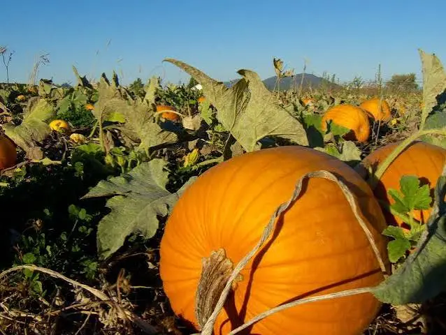
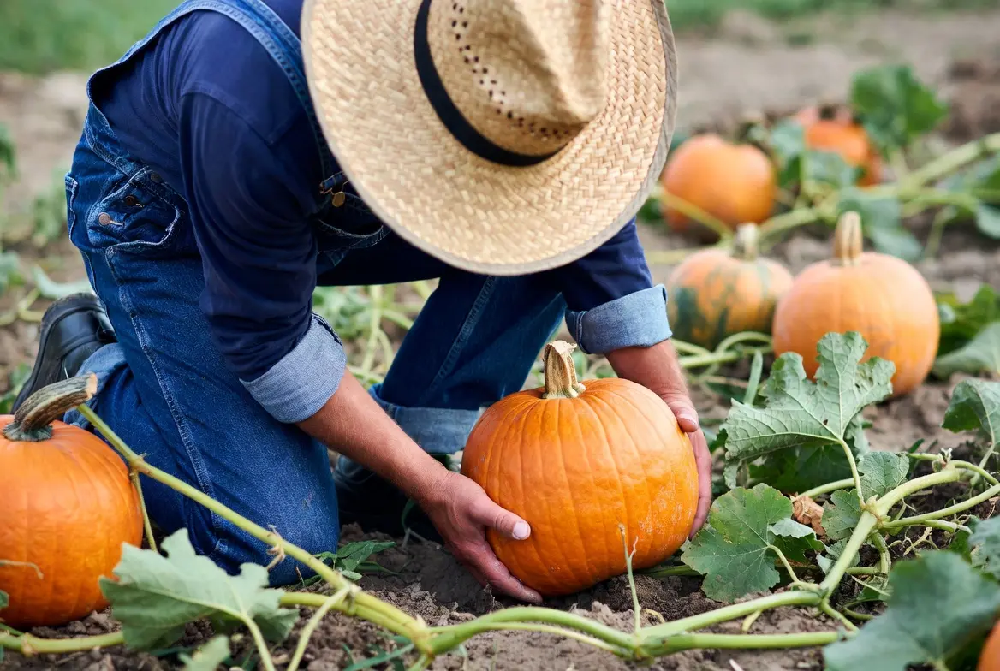

Growing Pumpkins and Winter Squash for Chickens
Pumpkins and winter squash can provide a seasonal harvest of edible flesh, seeds, storage food, and enrichment opportunities for backyard chickens. These large-space crops are valuable because they can support both the household and the flock while providing a useful fall and winter resource when properly harvested and stored.
🎃 Are Pumpkins and Winter Squash Good Crops for Chickens?
Pumpkins and winter squash are large, productive garden crops that can benefit both the household and backyard flock. They provide a seasonal harvest of edible flesh, seeds, stored food, and natural enrichment for chickens while fitting well into diverse homestead growing systems.
For backyard chickens, these crops can provide:
- Moisture-rich flesh
- Carotenoid-containing orange plant material
- Energy-dense seeds
- Fall and winter enrichment
- Use for surplus or cosmetically imperfect edible fruit
- A crop that may serve both the household and the flock
Their main disadvantages are the large amount of growing space required, heavy fruit, insect and disease pressure, and the low dry-matter concentration of fresh flesh.
Is This Crop Right for Your Flock and Backyard?
Crop success depends on more than whether chickens can eat it. Climate, growing space, sunlight, soil, water, labor, processing, equipment, harvest goals, and storage all affect whether it is a practical choice for your property.
🌱 Use the Feed Crop Planner →📋 Pumpkin and Winter Squash Quick Facts
🌱 Which Pumpkins or Winter Squash Should You Grow?
Pumpkins and winter squash differ greatly in vine length, fruit size, storage life, insect resistance, and household usefulness. A variety that produces enormous display pumpkins may be less practical than a smaller storage squash that fits your garden and keeps for several months.
Small Pie Pumpkins
Small pumpkins are easier to lift, cut, store, and offer to a flock than giant field pumpkins.
They may also serve as household cooking pumpkins.
Butternut and Other Storage Squash
Butternut-type squash often have dense flesh and good storage potential.
Many belong to Cucurbita moschata, a species that may tolerate squash vine borer pressure better than some other squash types.
Hull-Less Seed Pumpkins
Some varieties are bred to produce seeds with reduced or absent hard hulls.
These may be useful when seed production is the primary goal, although variety performance and disease resistance should still be considered.
Choose a small or medium-sized storage variety with a listed maturity period that fits your frost-free season. Compact or semi-bush varieties may be easier to manage in smaller gardens, while long-vining plants can be directed along garden edges.
🗓 When to Plant Pumpkins and Winter Squash
Pumpkins and winter squash are highly frost sensitive. Plant only after the danger of frost has passed and the soil has warmed to approximately 60–65°F or higher.
In short-season climates, plants may be started indoors approximately two to four weeks before transplanting. Avoid starting too early because squash roots and vines can become difficult to transplant without damage.
| Region | General Planting Approach | Likely Harvest Period |
|---|---|---|
| Cold North | Use early varieties. Start indoors briefly or direct sow after frost when soil is warm. | Late summer through early fall before a hard freeze. |
| Midwest and Northeast | Plant in late spring after frost danger and warm soil conditions. | Late summer through fall. |
| Upper South | Plant from mid- to late spring. Try to establish vines before the most severe summer heat. | Late summer through fall. |
| Deep South | Plant in spring after frost or use a later regional planting window where heat, pests, and disease permit. | Summer through late fall. |
| Southwest | Plant after frost when warm soil and dependable irrigation are available. | Summer through fall, depending on elevation and planting date. |
| Pacific Northwest | Use early varieties, transplants, or soil-warming methods in cool-summer locations. | Late summer into early fall before prolonged cold rain. |
| Coastal West | Plant after frost when the soil has warmed. Warmer inland locations are generally more dependable. | Late summer through fall. |
📐 How Much Space Do Pumpkins and Winter Squash Need?
Space requirements vary too widely for one universal plant-density number.
- Compact bush varieties may require approximately 2–4 feet between plants.
- Semi-bush varieties need more room as the vines extend.
- Long-vining pumpkins and storage squash may spread 6–10 feet or farther.
- Large-fruited varieties require substantial vine and fruit space.
The database combines bush, semi-bush, and long-vining Cucurbita crops. A single plants-per-square-foot figure would produce misleading garden-planning results.
Vines may sometimes be directed along a fence, garden perimeter, unused lawn edge, or between widely spaced orchard trees. This does not eliminate the plant’s space requirements, but it may keep the main garden beds available for other crops.
🪴 How to Plant Pumpkins and Winter Squash
- Choose a sunny location. Provide at least six to eight hours of direct sun and enough room for mature vines.
- Wait for warm soil. Plant after frost when the soil reaches approximately 60–65°F or warmer.
- Prepare fertile, well-drained soil. Squash grows vigorously when supplied with organic matter and balanced fertility.
- Plant approximately one inch deep. Follow the seed packet when its instructions differ for the chosen variety.
- Water thoroughly. Maintain consistent moisture during germination and establishment.
- Thin seedlings carefully. Retain the strongest plants at the spacing recommended for the mature growth habit.
- Plan the vine direction early. Guide young vines before they become heavy and tangled.
💧 Watering Pumpkins and Winter Squash
Pumpkins and winter squash require consistent moisture, especially during flowering, fruit set, and fruit enlargement.
Important watering practices include:
- Water deeply rather than applying frequent shallow sprinkles.
- Direct water toward the root zone rather than wetting foliage unnecessarily.
- Use mulch to conserve moisture and reduce soil splash.
- Avoid allowing plants to wilt repeatedly during fruit development.
- Do not keep roots in continuously waterlogged soil.
Uneven moisture can reduce fruit development, increase plant stress, and contribute to fruit-quality problems.
🌼 Flowering and Pollination
Pumpkin and squash plants produce separate male and female flowers. Male flowers usually appear first. Female flowers can be identified by the small undeveloped fruit directly behind the blossom.
Bees transfer pollen between flowers. Poor pollination may cause small fruits to yellow, soften, and fall from the vine.
To support pollination:
- Grow pollinator-friendly flowers nearby.
- Avoid insecticide applications when flowers are open and bees are active.
- Provide several healthy plants when space allows.
- Hand-pollinate early in the morning if natural pollination is poor.
🐛 Common Pumpkin and Squash Pests
| Problem | What You May Notice | Possible Response |
|---|---|---|
| Squash vine borer | Sudden wilting, damaged stem bases, or sawdust-like frass | Use resistant species where practical, monitor stem bases, rotate crops, and follow regional Extension guidance. |
| Squash bugs | Egg clusters, gray-brown insects, wilting, or leaf damage | Inspect leaf undersides, remove eggs early, clean crop debris, and use controls labeled for food crops if needed. |
| Cucumber beetles | Chewed leaves, damaged blossoms, or striped and spotted beetles | Protect young plants, use row covers before flowering, and remove covers when pollination is needed. |
| Powdery mildew | White powdery growth on leaves | Improve airflow, avoid unnecessary foliage wetting, select resistant varieties, and use approved controls where needed. |
| Fruit rot | Soft spots, mold, leakage, or discoloration | Keep fruit off wet soil where practical, avoid rind injury, and remove damaged fruit promptly. |
🔎 How to Tell When Pumpkins and Winter Squash Are Mature
Harvesting too early reduces storage life and eating quality. Signs of maturity may include:
- The fruit has developed its expected mature color.
- The rind is firm and difficult to puncture with a fingernail.
- The stem has begun to dry or harden.
- The fruit has reached the size expected for the variety.
- Vines and nearby leaves may begin declining naturally.
Do not rely only on vine death. Disease, drought, insects, or frost can kill a vine before the fruit is fully mature.

✂️ How to Harvest Pumpkins and Winter Squash
Harvest pumpkins and winter squash after the fruit has reached full maturity and developed a firm outer rind. Proper harvest timing improves storage life and allows the crop to become a useful seasonal resource for both the household and backyard flock.
- Choose mature fruit. Confirm that the rind, color, stem, and size match the variety’s maturity signs.
- Harvest before a hard freeze. Cold injury can reduce storage life and encourage decay.
- Cut rather than pull. Use clean pruners or a knife and leave a portion of stem attached when practical.
- Handle fruit gently. Bruises, cuts, punctures, and broken stems create entry points for decay.
- Separate damaged fruit. Use sound but imperfect fruit first rather than placing it into long-term storage.
- Prepare appropriate varieties for curing. Do not assume every squash species requires the same curing conditions.